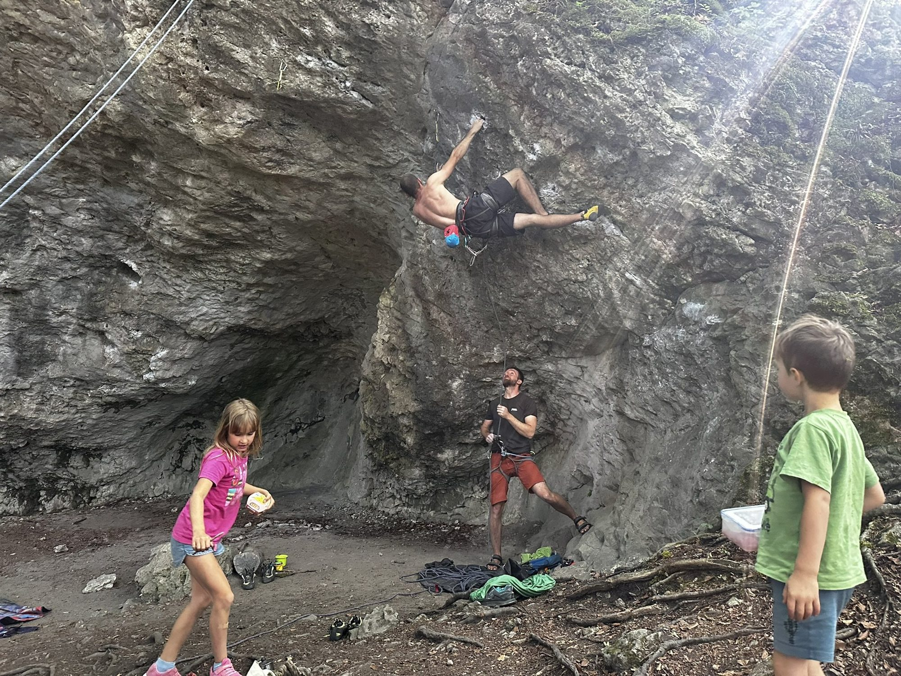

O nás
Skuteční lezci, profesionální organizace a zážitky, na které se nezapomíná.
Eventy Jinak vznikl jako myšlenka propojit dva světy. Svět lezení, outdooru, skalních kurzů a efektivně ho propojit s eventovými akcemi pro firmy, organizace či skupiny, které chtějí komplexní pohodlné řešení s autentickým duchem lezení a outdooru.
Kdo jsme a proč to děláme
Jsme skuteční lezci ze skal!
Lezení, jištění, slaňování, pohyb ve skalním terénu, práce s vybavením i vedení lidí v přírodě jsou pro nás přirozené prostředí, ne jen kulisa pro event. Stavíme na skutečné lezecké zkušenosti, na respektu ke skalám a na schopnosti vést skupinu bezpečně, s klidem a humorem.
Zároveň máme zkušenosti s managementem, komunikací s klienty a organizací akcí celého dne od prvního briefu až po bezpečný návrat. Právě to je naše síla: autentický outdoor od lidí z praxe, vedený profesionálně a systematicky.
Věříme, že firemní akce, teambuilding nebo zážitkový den nemusí být umělý program na hřišti nebo v kempu. Může to být poctivě připravený den ve skalách a v přírodě, vedený lidmi, kteří tomu opravdu rozumí a dokážou zajistit celý servis bez chaosu a improvizace.
Náš tým
Začínáme s lidmi, kteří umí spojit praxi ve skalách s klidným vedením akce.
Tým postupně skládáme z instruktorů a lidí z lezecké praxe, kteří mají chuť podílet se na silných akcích pro firmy i uzavřené skupiny. První potvrzené profily začínáme doplňovat sem.
V čem je to jiné
Spojujeme skutečné lezecké know-how s profesionálním servisem pro náročné klienty.
Autentičtí lidé z praxe
Akce nestaví marketéři ani animátoři. Vedou je lidé, kteří znají skály, vybavení, jištění i reálný pohyb v terénu.
Profesionální organizace
Máme zkušenosti s vedením lidí, koordinací programu, komunikací s klientem i dotažením celé akce od briefu po realizaci.
Kompletní servis od A do Z
Doprava, lokalita, instruktoři, vybavení, bezpečnost, občerstvení, ubytování i doplňkové výstupy řešíme jako jeden celek.
Silné řešení pro firmy i agentury
Umíme připravit akci pro firmy, eventové agentury, zahraniční partnery, cestovky i soukromé skupiny, které chtějí kvalitu bez kompromisů.
První medailonek
Za projektem stojí reální lidé, ne anonymní katalog instruktorů.

Samuel
Zakladatel projektu, organizace, komunikace s klienty a instruktor
Propojuje lezeckou praxi, přípravu akcí, komunikaci s klienty a celkovou organizaci projektu. Na akci řeší zadání, logistiku, servis i to, aby všechno drželo pohromadě od prvního briefu po bezpečný návrat.
Náš přístup
Outdoor profesionálně ale autenticky.
Nedodáme umělý program ale dobře připravený zážitek v autentickém prostředí Českých skal, který bude lidi bavit a dovolí jim bezpečeně si užít venkovní lezení. Každou akci stavíme podle skupiny, zkušeností účastníků, počasí, lokality a cíle celé akce.
Pokud hledáte partnera, který dodá skutečný outdoorový program vedený autentickými lezci a zároveň ho umí zorganizovat profesionálně od první domluvy až po poslední detail, přesně na tom Eventy Jinak stojí.
Kde všude jsme lezli :)
Ukázky naší práce.